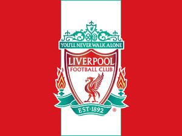
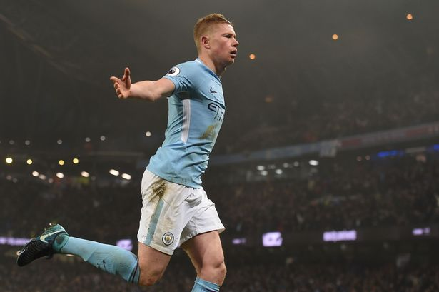

＜リヴァプール＞

今季絶好調のリバプール、3/1の試合で負けてしまったが、リーグ戦で18連勝もしていた。このチームは攻守ともに隙が少なく完成の域に達している。攻撃面では強力な昨季プレミア得点王に輝いたサラー、マネ、フィルミーノというトップ３がいて、守備面ではCBの2019年UEFA最優秀選手賞を獲得したファンダイクとマティプは足元が巧く、カバーリング、高さ、パワーも備えていますので非常に攻略が難しく、アンカーのファビーニョを含めたセンターラインは非常に強固で攻略が難しくなっています。さらに左SB、右SBには昨シーズンのリーグ戦で二桁アシストを達成するという化け物じみた成績を残したロバートソン、アレクサンダー・アーノルドがいます。２位と大差をつけていることから今季リーグ優勝はもう確実と言ってもいいでしょう。あとは日本人として今季に移籍した南野拓実選手の活躍にも注目ですね。
＜ケビン・デ・ブライネ＞(MF)

マンチェスター・シティ所属。攻撃を組み立てる最高のゲームメイカーである彼の特徴と言えば、長短を問わず精度が抜群に高いパス能力です。場所を問わず味方の動き出しに合わせてスルーパスを繰り出しますし、遠いサイドへの展開も職人技である。視野が広く、味方の動き出しは見逃しません。一瞬で決定機を作り出すパスセンスは素晴らしいものです。そして味方選手への絶妙なタイミングで攻撃の決定的な場面を演出し、アシストを量産している。今季15アシスト以上を記録したことで、プレミアリーグの異なる3シーズンで15アシスト以上を記録した史上初の選手となった。キックの精度自体が非常に高いので、シュートも相手に脅威を与えます。特にエリア外からのミドルシュートは強烈である。昨季はケガで苦しんだが、今季は好調で今までよりも良い成績を残しており、注目である。